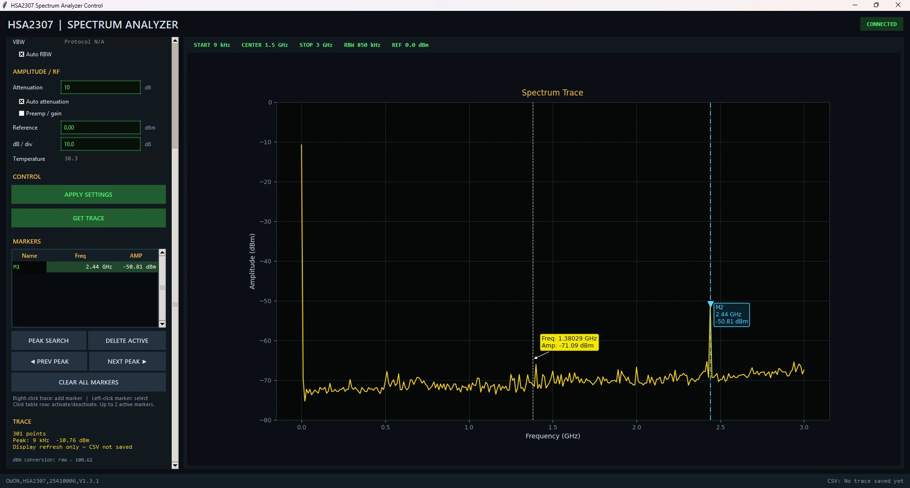
1. Introduction
As part of an effort to gain more hands-on experience with practical RF and hardware projects, I wanted to build a small RF bench that could support experimentation beyond simulation and circuit design alone. The difficulty is that RF laboratory equipment can quickly become expensive, particularly for an individual hobbyist. Spectrum analyzers, signal generators, oscilloscopes, and related test equipment can each represent a significant investment, making it difficult to assemble a capable personal RF lab without compromises.
This project began with two relatively affordable pieces of hardware that appeared capable of covering a large portion of those needs: an OWON HSA2307 handheld RF measurement instrument and an ADF4351-based RF signal generator.
The HSA2307 was particularly attractive because it combines several laboratory instruments into a single portable device, including a spectrum analyzer, oscilloscope, and digital multimeter. In addition to its standalone capabilities, the instrument includes a USB interface and advertised PC connectivity, making it appear well suited for a compact, software-controlled RF bench.
The ADF4351, on the other hand, provides a low-cost wideband RF synthesizer capable of generating signals across a large frequency range. Combined with an STM32 controller, it offered the possibility of developing a programmable RF source rather than purchasing a dedicated laboratory signal generator.
Both devices, however, required considerably more work before they could function as practical PC-controlled instruments.
The HSA2307 could be remotely configured through its USB interface, but one critical capability was missing: access to the measured spectrum trace. Without trace acquisition, the analyzer could be controlled from a computer, but it could not function as a complete PC-based spectrum analyzer. Solving this limitation led to an investigation of the instrument's communication interfaces and firmware, including UART and JTAG probing, firmware extraction, and static analysis.
The ADF4351 presented a different challenge. While the RF synthesizer itself provides the core signal-generation capability, turning it into a usable bench instrument required embedded firmware, SPI control, hardware bring-up and validation, a command interface, and ultimately a graphical PC application.
What began as two relatively inexpensive pieces of RF hardware therefore developed into a broader RF lab bring-up project spanning RF measurements, embedded systems, digital communication interfaces, firmware interrogation, reverse engineering, and PC-based instrumentation software.
The final result is a pair of complementary programmable instruments: an STM32-controlled ADF4351 RF source and an HSA2307 spectrum analyzer with extended PC-control capability. This write-up documents the development and investigation of both systems, from low-level hardware interfaces and firmware analysis through RF validation and the final graphical control applications.
2. The HSA2307 - A Low-Cost RF Multitool
The first instrument added to the lab was the OWON HSA2307, a handheld multifunction test instrument centered around a spectrum analyzer covering 9 kHz to 3 GHz.
What made the HSA2307 particularly attractive was that it was not limited to RF spectrum measurements. The same handheld unit also incorporates a dual-channel 70 MHz oscilloscope with sampling rates up to 250 MSa/s, as well as a 4½-digit digital multimeter. For a small personal lab, this combination is especially useful: a single portable instrument can cover basic RF measurements, time-domain signal debugging, and general electrical measurements without requiring three separate pieces of bench equipment.
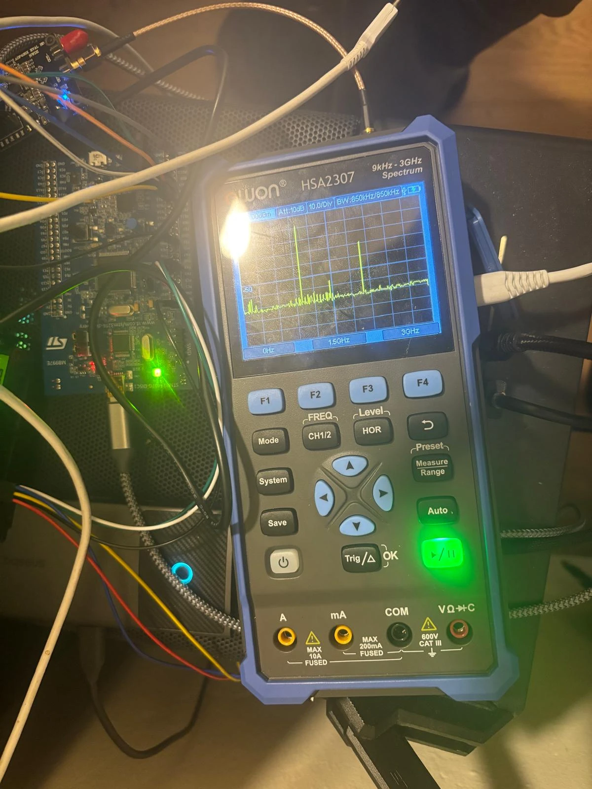
The price was another major factor. At approximately $300, the HSA2307 sits in a very different category from many traditional RF laboratory spectrum analyzers. While it cannot be expected to match the performance or capabilities of high-end bench equipment, its frequency range and combination of measurement modes make it an appealing option for hobbyist projects, hardware bring-up, and general RF experimentation.
For this project, however, another feature was equally important: PC connectivity.
OWON advertises the HSA2000 series with a USB Type-C interface supporting communication with a computer. This immediately made the instrument more interesting than a purely standalone handheld analyzer. A PC interface opens the possibility of automated configuration, measurement capture, data processing, and eventually integration with other programmable laboratory equipment.
That capability aligned closely with the goal of this project. Rather than using the HSA2307 only through its front-panel interface, I wanted to determine how much of the instrument could be controlled programmatically and whether it could ultimately function as part of an automated RF test setup.
At first, the answer appeared promising. Connecting the analyzer to a PC exposed a command interface, and several instrument parameters could indeed be queried and modified remotely.
There was, however, one particularly important piece missing.
3. The Missing Trace
Initial testing of the HSA2307's USB interface was encouraging. The instrument enumerated as a USB device and accepted a number of SCPI-style commands, allowing several important spectrum-analyzer settings to be queried and modified directly from a PC.
Basic identification and frequency-control commands worked as expected. The analyzer responded to queries for its identification string, center frequency, span, reference level, display scale, and several front-end parameters. Many of these settings could also be modified remotely, confirming that communication was not limited to simple status queries.
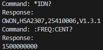
A small subset of the commands tested during the initial investigation is shown below. The listed purposes were inferred from the command naming and observed instrument behavior.
| Command | Alleged Purpose | Result |
|---|---|---|
| *IDN? | Query instrument identification | Successful |
| :FREQ:CENT? | Query center frequency | Successful |
| :FREQ:SPAN? | Query frequency span | Successful |
| :DISP:WIN:Y:RLEV? | Query display reference level | Successful |
| :DISP:WIN:Y:PDIV? | Query vertical scale per division | Successful |
| :POW:ATT:AUTO? | Query automatic input-attenuation state | Successful |
| :POW:GAIN:AUTO? | Query automatic gain state | Successful |
| :FREQ:CENT <value> | Set center frequency | Successful |
| :FREQ:SPAN <value> | Set frequency span | Successful |
| :DISP:WIN:Y:RLEV <value> | Set display reference level | Successful |
| :POW:ATT <value> | Set input attenuation | Successful |
| :TRAC? TRACE1 | Retrieve the currently displayed spectrum trace | No usable response |
This was enough to demonstrate that the analyzer could be remotely configured. From a software application, it was already possible to change the displayed frequency range and several important acquisition parameters.
However, remote configuration alone was not the main objective.
For the HSA2307 to operate as a useful PC-controlled spectrum analyzer, the computer also needed access to the measured spectrum itself. In other words, the analyzer had to provide the array of amplitude values used to construct the trace visible on its display.
This is where the interface became problematic.
The working commands followed conventions similar to those used by SCPI-controlled laboratory instruments, so a trace query was a natural next step. Several trace-related commands and variations were tested, including:
:TRAC? TRACE1along with queries relating to trace modes, detectors, and trace readout.
Unlike the basic configuration commands, however, these attempts did not produce useful spectrum data. Depending on the command, the instrument either failed to provide a meaningful response, timed out, or occasionally became unresponsive.
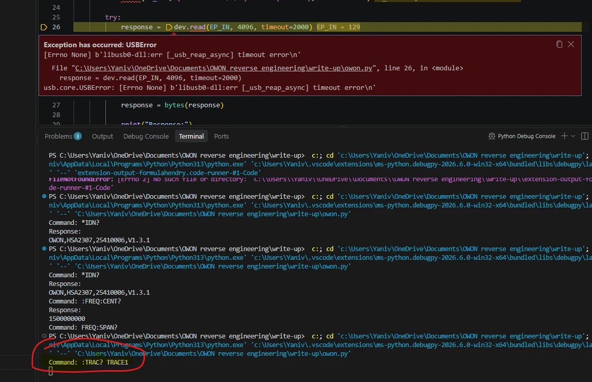
The distinction was important. The PC could tell the analyzer where to tune, what span to display, what reference level to use, and how to configure several front-end parameters, but it could not retrieve the measurement that the analyzer was actually displaying.
Without that final capability, a graphical PC application would effectively be little more than a remote front panel. It could configure the HSA2307, but it could not reproduce the spectrum display, implement PC-side markers, save trace data, or perform automated RF measurements.
The missing trace command therefore became the central problem of the HSA2307 investigation.
Rather than continuing to guess undocumented commands indefinitely, the next step was to examine the instrument itself and determine what additional communication and debug interfaces were available internally.
4. Hardware Debug Interfaces
With the external USB command interface providing configuration access but no usable trace data, the next step was to look inside the instrument for lower-level debug interfaces that could provide additional visibility into the firmware.
Opening the HSA2307 revealed several unpopulated and partially documented headers on the PCB. Of particular interest were a small three-pin header near the RF section and a larger header carrying signals with names commonly associated with processor debugging.
The first target was the three-pin header, which appeared to be a UART interface.
4.1 UART Investigation
The suspected UART header was examined electrically before connecting any external hardware. Ground was identified using continuity measurements, while the remaining pins were checked for their idle voltage and activity during normal operation and power-up.
One of the candidate signal lines remained at approximately 3.3 V while idle, consistent with the behavior expected from a UART transmit line.
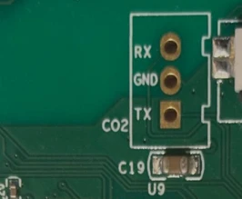
A 3.3 V USB-to-UART adapter was then connected, initially using common serial configurations such as 115200 baud, 8 data bits, no parity, and one stop bit.
Some data appeared to be present, but it was not readable as normal ASCII output. At 115200 and 230400 baud, the terminal produced only invalid or corrupted characters.
To determine whether the interface simply used an unusual baud rate or serial configuration, several additional configurations were tested.
| Configuration | Observed Result |
|---|---|
| 115200, 8N1 | Invalid / unreadable data |
| 115200, 8E1 | Invalid data |
| 115200, 8O1 | Invalid data |
| 115200, 8N2 | Invalid data |
| 230400 baud | Unreadable output |
| 921600 baud | Repeated raw value around 0x80 |
| 1,000,000 baud | Repeated raw value around 0x80 |
| 1,500,000 baud | Repeated raw value around 0x00 |
| 3,000,000 baud | Repeated raw value around 0x00 |
Changing parity, stop bits, and baud rate therefore did not reveal a recognizable console.
At this point, a USB logic analyzer was introduced to observe the signal directly rather than relying only on the UART decoder.
A HiLetgo FX2-based 24 MHz logic analyzer was connected to the suspected transmit line and configured using PulseView. The analyzer itself was first verified using a known signal before being connected to the HSA2307.
Captures were then performed during both normal operation and instrument startup.
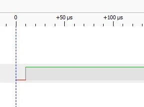
The resulting waveform provided little evidence of a conventional debug console. Following startup, the candidate transmit line remained continuously high, and repeated captures did not reveal a stream of asynchronous serial data that could be decoded into useful firmware messages.
The occasional values observed through the USB-to-UART adapter therefore appeared unlikely to represent a usable serial console.
The UART investigation was still useful. It eliminated one of the simplest possible routes into the instrument and demonstrated that gaining deeper firmware access would require moving beyond a conventional serial debug interface.
Attention therefore shifted to the larger PCB header and the possibility of accessing the processor through JTAG.
4.2 Debug Interface Investigation
With the UART route providing no useful firmware console, attention shifted to a second group of test points and headers on the HSA2307 PCB. Several nearby labels, including signals associated with reset and processor debugging, suggested that the board exposed a hardware debug interface.
The first assumption was that the interface might provide conventional JTAG access. A Waveshare CH347T-based USB debug adapter was therefore connected and OpenOCD was used to probe the target.
Initial attempts did not immediately reveal a usable JTAG scan chain. Logic-analyzer measurements nevertheless confirmed that the adapter was generating debug traffic, which indicated that the PC-side interface and cabling were functioning.
Further investigation suggested that the processor could instead be accessed through Serial Wire Debug (SWD).
The CH347 adapter was reconfigured accordingly, with OpenOCD explicitly selecting the SWD transport and using a target configuration compatible with the suspected processor family.
The resulting OpenOCD invocation included:
adapter driver ch347
transport select swdalong with the corresponding GD32F303 SWD target configuration.
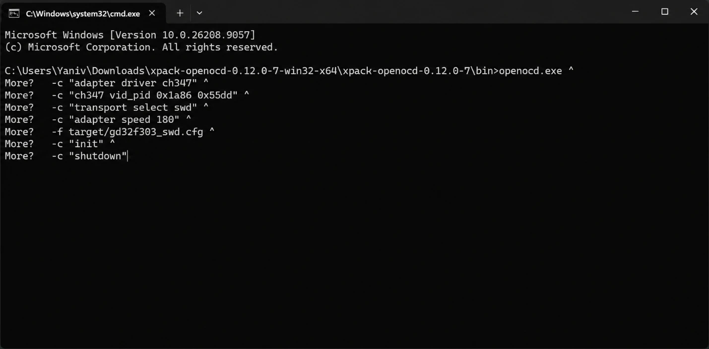
This change produced the first major breakthrough in the investigation.
OpenOCD successfully communicated with the target and identified an ARM Cortex-M4 processor. The SWD Debug Port Identification Register was successfully read, and OpenOCD repeatedly reported that target examination had succeeded.
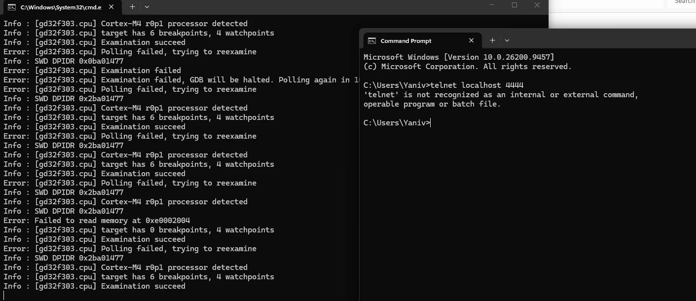
This result confirmed several important points at once.
First, the exposed hardware interface was not merely an unused manufacturing header - it provided functional processor-level debug access. Second, the processor responded correctly to SWD transactions, meaning that direct access to the device memory was now possible. Finally, the successful OpenOCD connection provided a path forward that no longer depended on undocumented USB commands or an inaccessible UART console.
At this stage, the investigation changed significantly in scope.
Rather than attempting to infer the missing spectrum-trace command only through trial-and-error communication with the running instrument, the firmware itself could now be examined directly. The next objective was therefore to use the debug connection to read the processor's flash memory and create a complete firmware image for offline analysis.
4.3 Firmware Extraction
Successful SWD access made it possible to move from probing the running instrument to directly examining the firmware stored in the processor's internal flash.
In principle, extracting the firmware should have been straightforward: halt the processor and use OpenOCD to read the flash address range into a binary file. In practice, larger continuous reads proved unreliable. Short reads succeeded consistently, while longer transfers would occasionally fail partway through the transaction.
Testing showed that 256-byte reads were repeatable, so the extraction process was changed from a single large memory read to a chunked acquisition method.
The flash was read in 256-byte blocks, with each block saved individually. Failed transfers were automatically retried, and the process could resume without restarting the entire dump. Once all blocks had been acquired, they were merged in address order to reconstruct the complete firmware image.
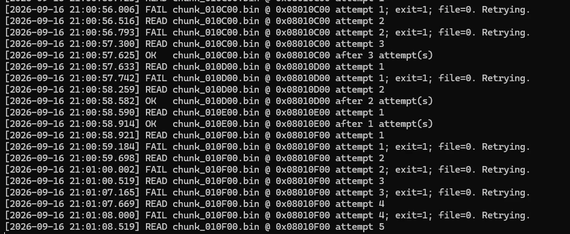
The resulting firmware image covered 1 MiB of flash memory, beginning at the processor flash base address of 0x08000000.
Because the purpose of the dump was firmware analysis, simply producing a binary file was not sufficient. A corrupted byte introduced during SWD communication could later appear to be an instruction, string, pointer, or data structure and lead the reverse-engineering process in the wrong direction.
The complete extraction was therefore performed more than once and the resulting images were compared.
| Dump | Size | SHA-256 |
|---|---|---|
| Pass 1 | 1,048,576 bytes | 46392BFEAEF8E7634D9D2F53983DDC509AE843FCAB20447AD88D92186CBDA5C7 |
| Pass 2 | 1,048,576 bytes | D883954264C10D33E8954E51BEE9164EE567CF795EDC86B746E7ECA525FA3248 |
The two hashes did not match exactly.
A byte-level comparison, however, showed that the discrepancy was extremely small: only 15 bytes differed across eight 256-byte chunks. Most of these differences occurred near the ends of individual read blocks.
This pattern was much more consistent with occasional SWD transfer corruption than with large-scale changes in the firmware itself. The result also demonstrated why relying on a single firmware read would have been risky - a dump could appear completely valid while still containing a handful of incorrect bytes.
The suspect regions could therefore be isolated and re-read independently rather than repeating the entire 1 MiB extraction every time.
This validation process produced a firmware image suitable for offline inspection and marked another major transition in the project. Until this point, the investigation had focused on observing the HSA2307 externally through USB, UART, and its hardware debug interface.
With the firmware available as a binary image, the search for the missing trace functionality could now move inside the instrument itself.
The next step was to load the firmware into Ghidra and begin looking for command strings, parser structures, USB communication routines, and references to spectrum-trace data.
5. Firmware Analysis in Ghidra
With a validated firmware image available, the investigation could move from probing external interfaces to examining the command implementation directly.
The firmware image was imported into Ghidra as a raw 32-bit little-endian ARM Cortex binary and mapped to the processor flash base address at 0x08000000. Known firmware contents, including the stored HSA2307 model string, were first used to confirm that the image had been loaded at the correct address.
The goal of this analysis was not to completely reverse engineer every function performed by the instrument. Instead, the immediate objective was considerably narrower: identify how the known remote-control commands were represented inside the firmware and use that structure to determine whether a spectrum-trace transfer command existed.
5.1 Establishing Known Reference Points
The first step was to search the firmware for strings corresponding to commands that had already been verified experimentally over USB.
Searching for terms such as FREQ revealed the mixed nature of the firmware strings. Alongside interface text such as Freq. cent. and Freq. fin., Ghidra also identified a string containing the mixed-case token:
FREQuencyThis distinction was important. The presence of an ASCII string alone does not demonstrate that it forms part of the remote-control interface. A command token therefore had to be followed through its cross-references and into the code that used it.
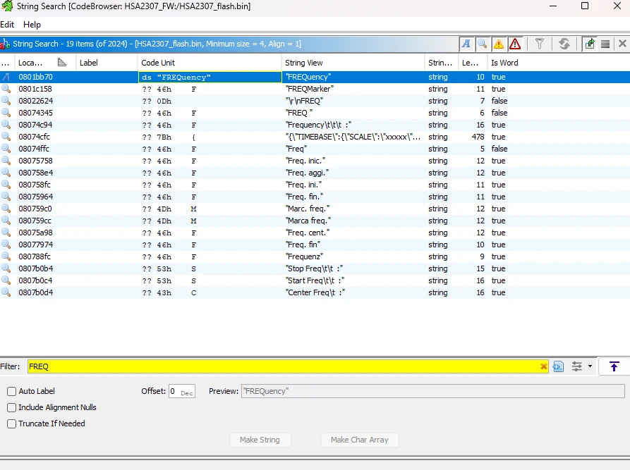
Following the references to FREQuency led to a large initialization routine containing repeated calls to the same function. Many of these calls used recognizable instrument-control strings as arguments, including DISPlay, BANDwidth, SCALe, and other command-like tokens.
The repeated structure suggested that this function was being used to construct the instrument's command hierarchy.
One occurrence of FREQuency initially led to a group containing measurements such as AVERage, PERiod, RTIme, and pulse-width parameters. This appeared to correspond to oscilloscope measurements rather than spectrum-analyzer frequency control, demonstrating why the surrounding context of each string reference had to be examined.
A second reference produced a much more recognizable structure.
The decompiled code first registered a top-level FREQuency node and stored the returned value. That value was then reused as the parent when registering the strings:
STARt
CENTer
STOP
SPANThe resulting structure could therefore be interpreted as:
FREQuency
├── STARt
├── CENTer
├── STOP
└── SPAN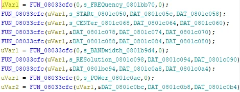
This provided an important validation of the reverse-engineering approach. Commands such as:
:FREQ:CENT?and
:FREQ:SPAN?had already been successfully executed against the physical HSA2307. The firmware structure reconstructed in Ghidra therefore matched commands whose behavior was already known experimentally.
With the command-tree interpretation established using known commands, the same approach could now be applied to the missing spectrum-trace function.
5.2 Recovering the Spectrum Trace Command
A firmware string search for SPEC identified several occurrences, including filesystem paths associated with stored spectrum files. One occurrence, however, appeared within the same command-registration routine examined previously.
The corresponding decompiled code registered SPEC as a top-level node and then reused its returned identifier when registering a number of child commands.
Searching the nearby firmware region for trace-related strings revealed the token:
TRACThe TRAC entry was then found directly within the SPEC registration block:
SPEC
└── TRAC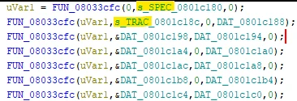
This revealed the command path:
:SPEC:TRAC?The result also explained why the earlier attempts using commands such as:
:TRAC? TRACE1had failed. Although another TRACe1 string existed elsewhere in the firmware, it belonged to a different portion of the command hierarchy. The spectrum-data transfer function was instead located beneath the dedicated SPEC branch.
At this point the command hierarchy strongly suggested that :SPEC:TRAC? was the missing query, but the analysis could be taken one step further by following its callback into the response-generation code.
5.3 Following the Trace Handler
The TRAC registration contained a callback pointer whose stored address was 0x0804C139. Because ARM Cortex-M function pointers use the least-significant bit to indicate Thumb execution, this corresponded to executable code beginning at:
0x0804C138Following the pointer produced a compact handler that called another function with the argument:
0x12Dor 301 in decimal.
The resulting function was then followed into the decompiler, where its purpose became considerably clearer. The code iterated over the requested data points and contained the floating-point format string:
%0.7fIt also contained the literal response prefix:
#9000002107Together, these findings showed that the TRAC handler was not simply another configuration command. It led directly into code responsible for constructing a host response from a 301-point data set and serializing the values as formatted floating-point numbers.
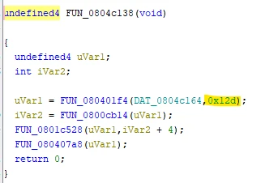
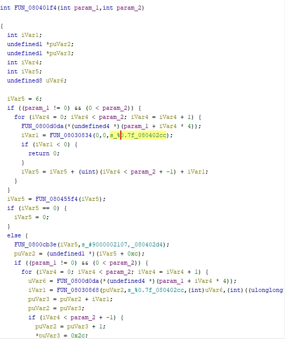
The complete path recovered from the firmware could therefore be summarized as:
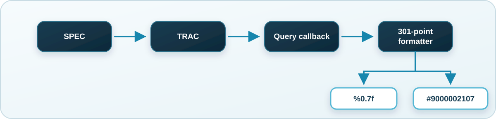
This provided a much stronger result than simply locating the text TRAC inside the binary. The command could be followed from its position in the command parser through its registered handler and into the code responsible for formatting the returned spectrum data.
5.4 AI-Assisted Broader Analysis
The manual analysis above was intentionally focused on establishing a reproducible path through the firmware: starting from known working commands, identifying the command-registration structure, and then applying the same method to the previously unknown trace function.
Extending this process manually across the entire firmware image, however, would have required tracing a large number of command nodes, callback pointers, strings, and decompiled functions individually.
For this reason, AI tools were used to assist with the broader static-analysis process. This included correlating command strings and cross-references, examining decompiled functions, reconstructing larger portions of the command hierarchy, and prioritizing regions of the firmware that were likely to contain useful instrument-control functionality.
The AI-assisted analysis was treated as an investigative tool rather than an authoritative source. Candidate findings were checked against the firmware itself and, where practical, validated experimentally against the physical instrument.
The :SPEC:TRAC? command provides a useful example of this workflow. The wider analysis helped identify the relevant portion of the firmware, while manual inspection in Ghidra independently demonstrated the command hierarchy and response-generation path. The final test would therefore be performed on the instrument itself: send the recovered query and determine whether the HSA2307 actually returned the spectrum trace.
6. Recovering and Validating the Spectrum Trace
With the SPEC → TRAC command path recovered from the firmware, the next step was to determine whether the query actually worked on the physical instrument.
6.1 First Successful Trace Acquisition
The recovered command was sent through the same USB interface previously used for the known configuration queries:
:SPEC:TRAC?Unlike the earlier attempts using commands such as :TRAC? TRACE1, the HSA2307 immediately returned a large multi-packet response.
The beginning of the response contained the same header identified during the firmware analysis:
#9000002107,followed by a sequence of comma-separated floating-point values.
After collecting the complete USB transaction rather than reading only a single USB packet, the response contained 3326 bytes. Parsing the returned numeric values produced exactly 301 trace points, matching the 0x12D point count observed earlier in the decompiled trace handler.
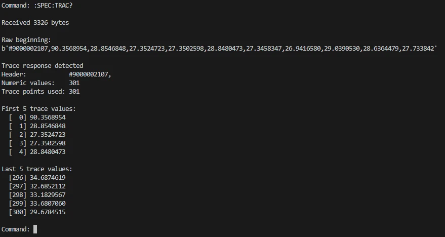
This provided the first direct experimental confirmation that the command recovered from the firmware was connected to the spectrum data displayed by the instrument.
6.2 Response Format
The trace response initially appears similar to a conventional instrument data block because it begins with:
#9000002107However, the firmware analysis showed that the HSA2307 does not construct a conventional fixed-length binary payload.
Instead, each of the 301 samples is converted to variable-width ASCII text using the format:
%0.7fand separated by commas.
The resulting transaction captured from the physical instrument was 3326 bytes long, despite the 2107 value contained in the response header. This experimentally confirmed the serialization inconsistency observed during the firmware analysis.
A PC-side implementation therefore cannot safely treat 2107 as the actual transfer length.
Instead, the trace parser:
- Locates the known #9000002107, prefix.
- Collects the complete multi-packet USB response.
- Extracts valid floating-point values from the returned byte stream.
- Retains the first 301 complete samples.
This produced repeatable trace acquisition without relying on the inconsistent length field.
6.3 Reconstructing the Frequency Axis
The returned trace contains the amplitude samples themselves, but does not provide a frequency value alongside each individual point.
The frequency axis can instead be reconstructed from the analyzer's current start and stop frequencies, which are independently available through the remote-control interface.
For a normal sweep containing 301 points:
where:
The first returned point therefore corresponds to the configured start frequency and the final point corresponds to the stop frequency.
Combining the queried sweep limits with the 301 returned samples produces a complete PC-side representation of the spectrum trace.
6.4 Determining the Amplitude Scale
The returned floating-point values were clearly related to the displayed spectrum, but their numerical values were not directly expressed in dBm.
To determine the relationship, traces were acquired under the same analyzer settings using two independent methods:
- the recovered :SPEC:TRAC? USB query, providing the raw trace values;
- the HSA2307's own CSV export, providing the corresponding amplitude values in dBm.
The two data sets were then compared point-by-point in Excel.
Rather than assuming a particular conversion, the HSA-exported amplitudes were plotted directly against the raw USB values using an XY scatter plot and fitted with a linear regression.
The resulting relationship was:
with the displayed coefficient of determination rounding to:
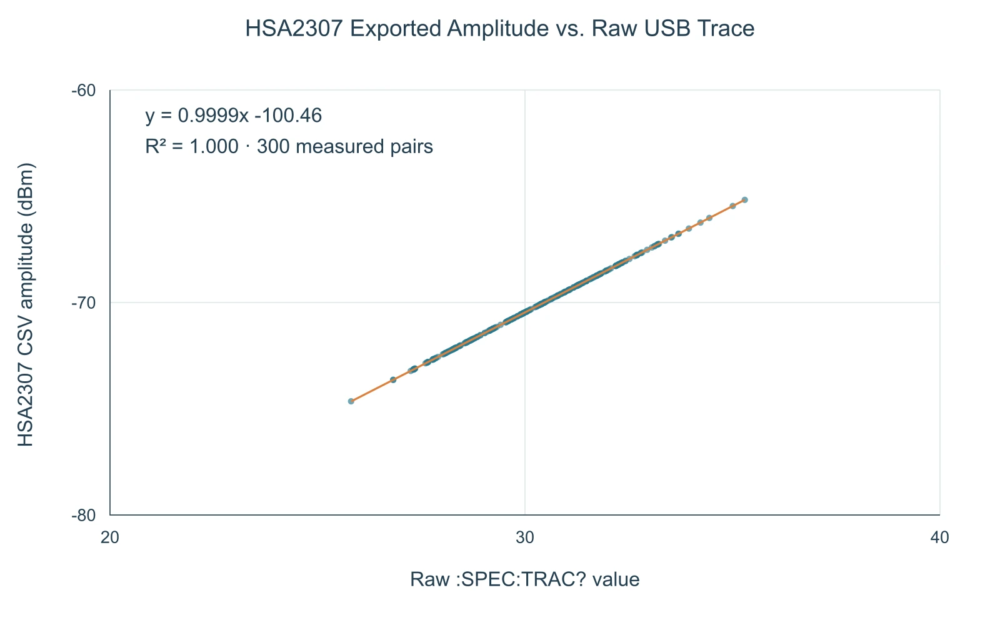
The near-unity slope is particularly useful. It indicates that the returned values are not arbitrary ADC counts requiring a nonlinear conversion. Instead, the trace already preserves the analyzer's logarithmic amplitude scale and primarily differs from the exported dBm values by a constant offset.
For this instrument, the practical conversion can therefore be simplified to:
The small deviation of the fitted slope from exactly 1 is negligible for the purpose of displaying the recovered trace.
Because the comparison was performed using separate acquisitions rather than an identical frozen data set, individual points were not expected to be perfectly identical. Despite this, the measurements collapsed onto a highly linear relationship, providing strong experimental confirmation of the conversion.
6.5 Result
At this point, the original limitation of the HSA2307 PC interface had been resolved.
The computer could now:
- configure the analyzer through its existing command interface;
- retrieve the complete 301-point spectrum trace;
- reconstruct the corresponding frequency axis;
- convert the returned raw amplitude values into dBm;
- and process or save the resulting measurements independently of the instrument display.
The investigation had therefore progressed from an unsuccessful guessed command:
:TRAC? TRACE1through hardware interrogation, firmware extraction, and static analysis to the recovered and experimentally validated query:
:SPEC:TRAC?With trace acquisition available, the HSA2307 could finally be treated as more than a remotely configurable handheld instrument. The next step was to use the recovered functionality to build a complete PC-based spectrum-analyzer interface.
7. PC Spectrum Analyzer Interface
Recovering the spectrum trace solved the central communication problem, but manually sending USB commands and parsing the returned data was not a practical way to use the analyzer during normal bench work.
The final step was therefore to combine the recovered command set, trace parser, frequency reconstruction, and amplitude conversion into a dedicated PC application.
The result was a Python-based graphical interface that turns the HSA2307 into a more conventional PC-controlled spectrum analyzer while continuing to use the instrument itself for the RF acquisition.
7.1 Instrument Control
When connected, the application first identifies the HSA2307 and verifies that the instrument is operating in spectrum-analyzer mode. It then queries the current analyzer configuration and populates the corresponding controls in the GUI.
The available controls include:
- start and stop frequency;
- center frequency and span;
- resolution bandwidth;
- automatic or manual RBW selection;
- input attenuation and automatic attenuation;
- preamplifier control;
- reference level;
- vertical dB/division scale.
Changing these parameters in the application sends the corresponding recovered commands back to the instrument.
Particular care was required for the frequency controls. Start/stop and center/span represent two different descriptions of the same sweep, meaning that blindly transmitting all four values could unintentionally overwrite a newly requested configuration.
The GUI therefore tracks which parameters were actually edited and sends only the relevant commands before reading the resulting settings back from the analyzer.
This allows the physical instrument to remain the authoritative source for the final sweep configuration.
7.2 Trace Acquisition and Display
Trace acquisition is performed using the recovered:
:SPEC:TRAC?query.
The application collects the complete multi-packet USB response, extracts the 301 returned trace values, reconstructs the frequency axis from the analyzer's current start and stop frequencies, and applies the amplitude conversion established during the validation process.
The resulting spectrum is then displayed directly in the application.
The plot automatically scales its frequency units between kHz, MHz, and GHz depending on the selected sweep range.
Moving the cursor across the trace also provides an interactive frequency and amplitude readout, allowing individual portions of the spectrum to be inspected without relying on the HSA2307's physical display.
7.3 PC-Side Markers
Once trace data was available on the PC, measurement functionality no longer had to be limited to the marker implementation provided by the instrument firmware.
The GUI therefore implements its own marker system directly on the acquired trace.
A new marker can be created by right-clicking the desired location on the spectrum. The marker is snapped to the nearest acquired trace point and its frequency and amplitude are added to a marker table.
Markers are assigned default names such as:
M1, M2, M3, ...
and can subsequently be renamed.
Markers can also be selected either from the table or directly from the plotted trace. This makes the PC interface useful not only for reproducing the analyzer display, but also for adding measurement and interaction features on top of the recovered spectrum data.
The marker implementation is performed entirely on the PC side and therefore does not depend on the more limited marker commands available through the HSA2307 firmware.
7.4 Measurement Export
The recovered trace can also be saved directly from the application.
An explicit trace acquisition generates a CSV containing the reconstructed frequency values and corresponding amplitudes, allowing the measurement to be imported into Excel, Python, MATLAB, or other analysis tools.
Separating acquisition from visualization also makes the data available for later automated measurements, comparisons, and processing without requiring screenshots or manual transcription from the analyzer.
7.5 Result
The completed application changed the role of the HSA2307 considerably.
At the beginning of the investigation, the PC interface could modify several analyzer settings but could not retrieve the measurement itself. After recovering and validating the undocumented trace path, the same instrument could now be used through a graphical PC interface providing:
- remote analyzer configuration;
- complete spectrum-trace acquisition;
- calibrated amplitude display;
- cursor-based measurement readout;
- PC-side markers;
- and CSV measurement export.
The result was not a replacement for the HSA2307 firmware or RF hardware, but an additional software layer built on top of the capabilities already present inside the instrument.
More importantly, it completed the original objective of the investigation: transforming an inexpensive handheld analyzer with limited documented PC functionality into a practical programmable RF measurement tool.
8. The ADF4351 - A Low-Cost Programmable RF Source
With the spectrum-analyzer side of the lab operational, the next missing capability was a controllable RF source.
Dedicated RF signal generators can quickly become another expensive piece of laboratory equipment, particularly when wide frequency coverage and computer control are required. For basic RF experimentation, filter testing, receiver bring-up, and other bench measurements, however, a much simpler source can already be extremely useful.
This made inexpensive ADF4351-based synthesizer modules particularly attractive.
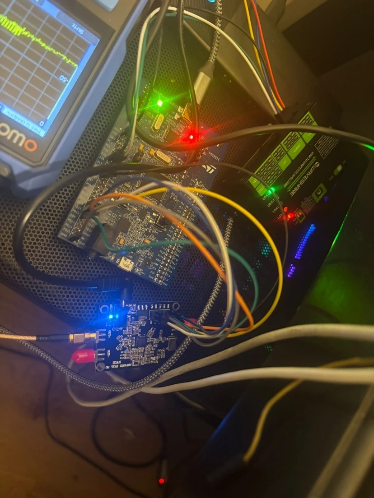
At first glance, the module appeared almost unusually capable for its cost. The ADF4351 combines a fractional-N/integer-N PLL with an integrated VCO and provides an RF output covering approximately 35 MHz to 4.4 GHz. The internal VCO itself operates from 2.2 to 4.4 GHz, while programmable output dividers of 1, 2, 4, 8, 16, 32, and 64 extend the usable output frequency down to 35 MHz.
This frequency range was particularly useful for a small personal RF bench. A single inexpensive module could cover much of the range of interest for the filters, antennas, cables, and other RF hardware I wanted to experiment with.
The device also appeared straightforward to control. Rather than requiring a complicated digital interface, the ADF4351 is configured through a simple 3-wire serial interface, functionally consisting of clock, data, and latch-enable signals. Six 32-bit configuration registers control the PLL, output divider, RF output power, operating modes, and other synthesizer functions.
This made the device a good candidate for an STM32-based controller: calculate the required register values, transmit them over SPI, and expose a simpler command interface to the PC.
Some of the relevant ADF4351 characteristics are summarized below.
| Parameter | Datasheet Capability |
|---|---|
| RF output frequency | 35 MHz to 4.4 GHz |
| Synthesizer architecture | Fractional-N / Integer-N PLL |
| Integrated VCO range | 2.2 GHz to 4.4 GHz |
| Output divider | ÷1, ÷2, ÷4, ÷8, ÷16, ÷32, ÷64 |
| RF output power | Approximately -4 to +5 dBm, programmable in 3 dB steps |
| Digital control | 3-wire serial interface |
| RF output mute | Software and hardware controllable |
| Lock indication | Analog and digital lock detect |
| Supply voltage | 3.0 V to 3.6 V |
The datasheet specifies typical programmable RF output levels spanning approximately -4 dBm to +5 dBm, with 3 dB steps. It also provides RF mute and lock-detect functionality, both of which are particularly useful when turning the synthesizer into a practical bench instrument rather than using it only as a bare RF IC.
The datasheet also specifies low phase-noise operation and a typical integrated RMS jitter on the order of 0.3 ps, although the performance of a complete low-cost module also depends on factors outside the ADF4351 itself, including the reference oscillator, loop filter, power supplies, PCB layout, and RF output network.
For this project, the goal was therefore not to claim performance equivalent to a calibrated laboratory signal generator. Instead, the objective was to determine whether an inexpensive ADF4351 module could be turned into a useful, controllable RF source by combining it with an STM32, custom firmware, RF validation, and a PC interface.
Unlike the HSA2307 investigation, where the main challenge was recovering functionality hidden inside an existing instrument, the ADF4351 presented almost the opposite problem: the RF capability was readily available, but the surrounding control system still had to be built.
The first step was therefore to provide the synthesizer with an embedded controller capable of calculating and programming its registers over SPI.
9. STM32 Control Architecture
The ADF4351 was not controlled directly from the PC. Instead, an STM32 microcontroller was placed between the user interface and the RF synthesizer, providing a simple embedded control layer for the module.
This part of the project actually builds on the first technical portfolio write-up I published, which focused on developing a UART-based command-line interface for an STM32. That project established the basic communication framework used here: a PC sends human-readable commands over UART, the STM32 parses them, executes the requested operation, and returns status information to the host.
Rather than repeating the full UART CLI implementation in this write-up, that existing interface was reused as the foundation for the RF generator.
The resulting control path was:
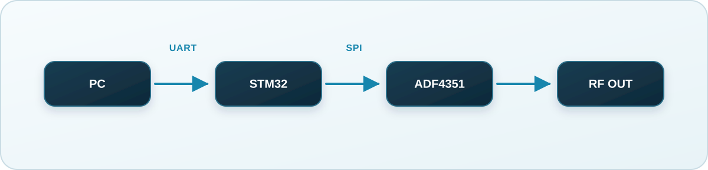
The PC therefore does not need to understand the ADF4351 register format directly. It only needs to issue higher-level commands such as setting a frequency, changing the RF output level, enabling or disabling the output, or requesting the current synthesizer state.
The STM32 translates those requests into the register values required by the ADF4351.
9.1 UART Command Layer
The existing UART CLI provided a convenient interface for bringing up the synthesizer before any graphical application was developed.
A typical interaction could therefore follow the form:
SET FREQ 1000000000
SET POWER 5
RF ON
STATUSThe exact command entered by the user is parsed by the STM32 and passed to the appropriate ADF4351 control routine.
This proved particularly useful during hardware bring-up. Individual synthesizer functions could be exercised directly from a terminal without recompiling the firmware for every test, making it possible to change frequency, power, and operating state while simultaneously observing the SPI bus, lock status, and RF output.
9.2 SPI Interface
Communication between the STM32 and ADF4351 uses the synthesizer's three-wire serial interface.
The relevant signals are:
- DATA - serial configuration data;
- CLK - serial clock;
- LE - latch enable, used to transfer a completed 32-bit word into the selected ADF4351 register.
Each configuration transaction consists of a 32-bit register word shifted into the device before the latch-enable signal commits the value.
Although the interface is SPI-like, the ADF4351 is primarily a write-configured device. The microcontroller therefore maintains the desired synthesizer state in firmware and generates the required register values locally rather than treating the device like a conventional readable SPI peripheral.
9.3 Separating User Commands from RF Configuration
A useful design choice was to keep the UART command interface separate from the low-level ADF4351 implementation.
Conceptually, the firmware is divided into three layers:
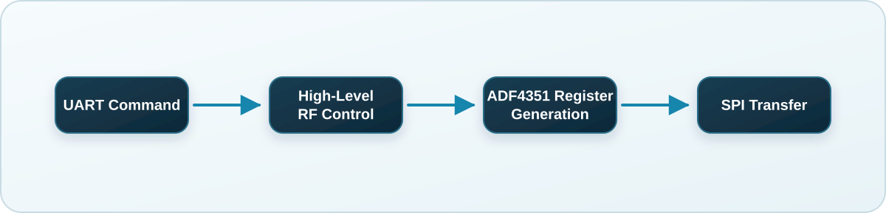
For example, a request for a new output frequency does not require the user to calculate PLL register fields manually. The STM32 receives the requested frequency, determines the corresponding synthesizer configuration, constructs the required 32-bit register values, and then programs the ADF4351 in the appropriate sequence.
This separation also made the system easier to extend later. The same high-level RF functions used by the UART CLI could eventually be called from a graphical PC application without changing the underlying ADF4351 control code.
9.4 Bring-Up Strategy
The UART interface became the primary bring-up tool for the RF source.
Before attempting to build a graphical signal-generator application, the system could be tested one layer at a time:
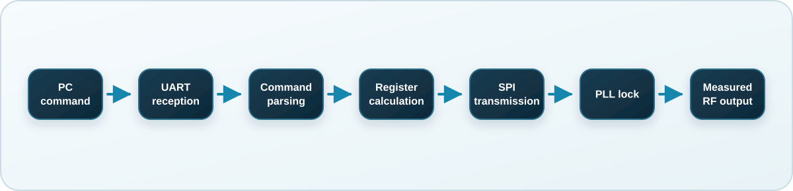
This layered approach made debugging considerably easier. If the requested RF signal did not appear, the problem could be isolated by checking whether the UART command had been received, whether the expected SPI transaction occurred, whether the synthesizer reported lock, and finally whether the RF output appeared at the expected frequency.
With the communications architecture in place, the next task was therefore to implement the ADF4351-specific firmware: converting a requested RF frequency into a valid PLL configuration and programming the device registers accordingly.
10. ADF4351 Firmware and Register Programming
With the UART control layer in place, the next task was to translate a requested RF frequency into a valid ADF4351 configuration.
Although the device is controlled through only six 32-bit registers, setting an output frequency involves more than writing the desired value directly. The requested RF frequency must first be mapped into the ADF4351's internal VCO range, the PLL division ratio must be calculated, and a number of supporting parameters must be configured before the register words can be transmitted.
The firmware therefore separates the process into two stages:
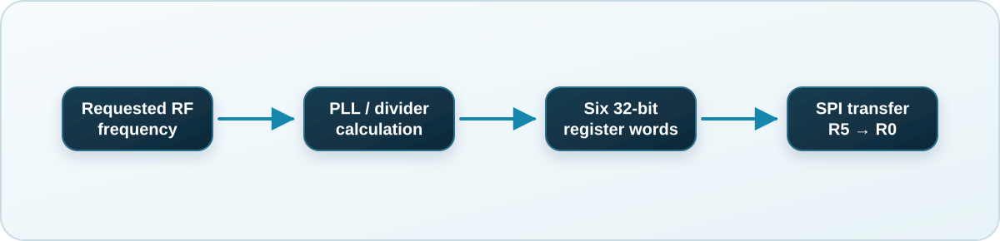
10.1 Reference and Phase-Frequency Detector
The module used in this project contains a 25 MHz reference oscillator.
The firmware currently uses:
- reference divider \(R=1\);
- reference doubler disabled;
- reference divide-by-two disabled.
The resulting phase-frequency detector frequency is therefore:
The requested channel spacing is then used to calculate the fractional modulus:
The ADF4351 provides a 12-bit MOD field, so the resulting value must remain between 2 and 4095. The firmware also requires the selected channel spacing to divide the 25 MHz PFD frequency evenly.
For example, with the default 10 kHz spacing:
10.2 VCO and Output Divider Selection
The internal ADF4351 VCO operates between approximately 2.2 and 4.4 GHz.
For requested frequencies below this range, the firmware selects the smallest available RF output divider that moves the internal VCO frequency back into its valid operating range:
where:
The divider is increased until the calculated VCO frequency falls between 2.2 and 4.4 GHz.
For example, a 1 GHz output requires:
giving:
whereas a 2.45 GHz output can use:
and operate the VCO directly at 2.45 GHz.
This mechanism is what allows the integrated 2.2-4.4 GHz VCO to produce RF outputs well below its own operating frequency.
10.3 Calculating INT, FRAC, and MOD
Once the VCO frequency is known, the required PLL division ratio is calculated as:
with:
The integer portion becomes the INT field, while the remaining fractional portion is converted into FRAC/MOD.
The firmware calculates:
and derives FRAC from the remaining frequency error.
If the fractional value rounds up to the modulus, the firmware increments INT and resets FRAC to zero. For non-zero fractional configurations, FRAC and MOD are also reduced by their greatest common divisor, producing a simpler fractional ratio.
When:
the synthesizer can operate in integer-N mode. Otherwise the configuration is treated as fractional-N.
As an example, requesting 2450 MHz with the 25 MHz PFD produces:
and therefore:
With a 10 kHz channel spacing, the firmware still retains:
but the zero fractional term means the actual PLL configuration is integer-N.
A typical CLI response therefore reports:
requested : 2450.000000 MHz
actual : 2450.000000 MHz
VCO : 2450.000000 MHz
INT=98 FRAC=0 MOD=2500 RFdiv=1 BSdiv=200 (integer-N)The firmware reports the requested frequency, calculated VCO frequency, actual realizable output frequency, divider values, and whether the final configuration is integer- or fractional-N.
10.4 Supporting PLL Parameters
Several supporting parameters must also be selected before the six register words can be assembled.
The firmware selects the ADF4351 prescaler according to the calculated integer divider. The 8/9 prescaler is used when the integer division ratio is sufficiently large, while lower division ratios use the 4/5 prescaler.
The band-select clock is also constrained. With the firmware configured for the low band-select clock mode, the divider is selected so that:
For the 25 MHz PFD used here:
which explains the BSdiv=200 value visible in the CLI output.
10.5 Register Construction
Once the PLL parameters are known, the firmware constructs the six ADF4351 registers.
The primary functions of the generated words are summarized below.
| Register | Main Configuration Used in This Project |
|---|---|
| R0 | INT and FRAC PLL divider values |
| R1 | MOD, phase value, and prescaler |
| R2 | Reference divider, charge-pump settings, integer/fractional lock-detect configuration, MUXOUT |
| R3 | Band-select and clock-divider timing configuration |
| R4 | RF output divider, band-select divider, RF output enable, output power |
| R5 | Digital lock-detect output configuration |
The output power selection is encoded in Register 4 and exposes the ADF4351's four nominal power settings:
- -4 dBm
- -1 dBm
- +2 dBm
- +5 dBm
Register 4 also contains the main RF-output enable bit, allowing the firmware to disable the RF output without shutting down the complete synthesizer. Register 5 configures the lock-detect pin for digital lock indication.
10.6 SPI Register Transfer
Once all six register words have been generated, they are transmitted to the ADF4351 over SPI.
Each word is sent most-significant byte first as a 32-bit transaction. LE remains low while the register is shifted into the device and is then briefly driven high to latch the completed word.
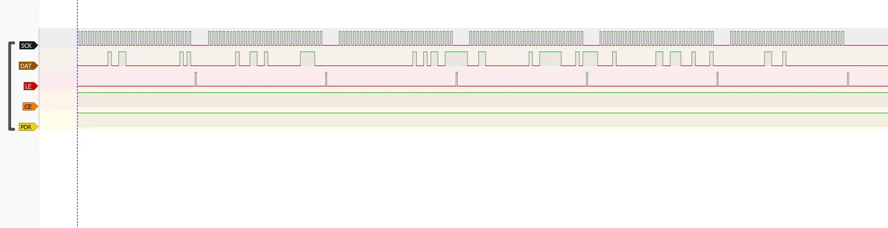
A complete configuration is written in the order:
with R0 written last, since writing R0 initiates the VCO band-selection process.
During initialization, the firmware also transmits one dummy SPI word with LE held low before any real register programming. This was added to absorb an unwanted initial clock edge observed when the STM32 SPI peripheral was first enabled, preventing that startup behavior from affecting a valid ADF4351 register transaction.
10.7 Lock Detection and Readback
After the configuration is written, the firmware waits briefly for the synthesizer to settle before sampling the hardware lock-detect signal.
The lock state can then be queried independently through:
LOCKwhile the complete calculated register configuration can be displayed using:
REGand the current generator state through:
STATUSThis proved useful during bring-up because the software could distinguish between several different stages of operation. A correctly parsed UART command and valid set of register values did not necessarily mean that the PLL had actually locked; the hardware lock-detect signal provided a separate confirmation that the RF synthesizer had accepted the configuration.
At this point, the complete digital control path was operational:
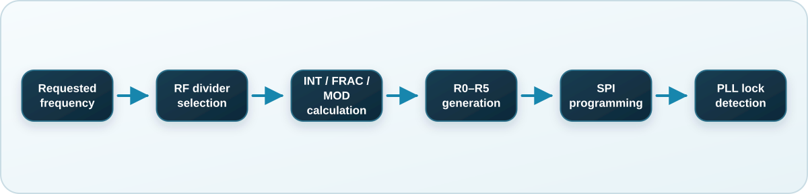
The next step was to verify that this digital configuration was actually reaching the ADF4351 correctly on the physical interface, and then confirm that the expected RF signal appeared at the module output.
11. Hardware Bring-Up and RF Validation
At this point, the control software could calculate a valid ADF4351 configuration and transmit the resulting register values through SPI. The remaining question was whether the complete physical system behaved as expected.
The bring-up process was therefore approached in layers: first verify the digital interface, then confirm PLL lock, and finally inspect the generated RF signal directly with the spectrum analyzer.
11.1 Initial Bring-Up
Early tests demonstrated an important distinction between correct-looking firmware output and a functioning RF synthesizer.
For example, requesting a 2.45 GHz signal produced a sensible calculated configuration:
requested : 2450.000000 MHz
actual : 2450.000000 MHz
VCO : 2450.000000 MHz
INT=98 FRAC=0 MOD=2500 RFdiv=1 BSdiv=200 (integer-N)Yet the hardware initially reported:
LOCK: NOThe PLL calculations therefore appeared reasonable, but that alone did not establish that the ADF4351 had actually received and accepted the configuration.
Rather than immediately modifying the register equations, the next step was to observe the digital interface directly.
11.2 SPI Validation with a Logic Analyzer
A logic analyzer was connected to the ADF4351 control lines so that the SPI transaction could be inspected independently of both the STM32 firmware and the RF output.
The key signals were:
- CLK - SPI clock;
- DATA - MOSI configuration data;
- LE - latch enable.
Each register transaction was expected to contain exactly 32 clocked data bits, followed by an LE pulse that transfers the completed word into the selected ADF4351 register.
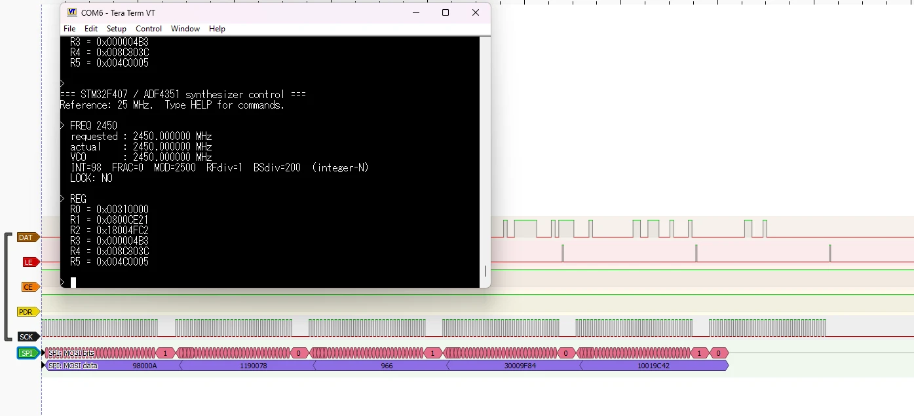
The captures confirmed that the STM32 was generating the expected clock and data activity and that LE remained low during the transfer before pulsing high after the final bit.
A complete synthesizer update consisted of six such transfers in the required sequence:
with R0 written last to initiate VCO band selection. This order is also enforced directly by the firmware.
One additional startup behavior was discovered during this process. When the STM32 SPI peripheral was first enabled, an unwanted initial clock edge could occur. To prevent this from affecting a real register transaction, the initialization routine was modified to transmit one dummy 32-bit word while LE remained low. Since the word was never latched, the extra startup activity was safely discarded before the actual configuration was written.
This is a good example of why observing the physical bus was useful. A firmware function call such as HAL_SPI_Transmit() only proves that the software attempted to send data; the logic-analyzer capture confirmed what was actually occurring on the wire.
11.3 PLL Lock
Once the digital interface had been verified, the lock-detect signal provided the next level of confirmation.
The ADF4351 module exposes its digital lock state to the STM32, allowing the firmware to report whether the PLL has successfully settled onto the requested frequency.
After resolving the initial bring-up issues, a 1 GHz configuration successfully reported lock.
At that point, three independent stages of the signal chain agreed:
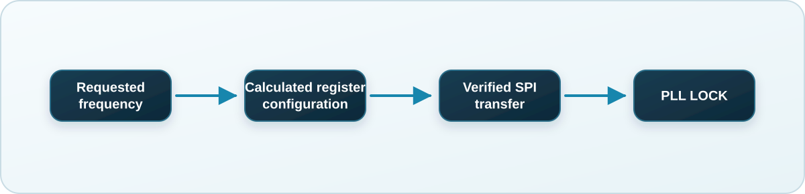
The final verification was therefore to measure the RF output itself.
11.4 RF Output Verification
The ADF4351 output was connected directly to the HSA2307 spectrum analyzer through a coaxial cable and configured for a 1 GHz continuous-wave output.
The resulting spectrum showed a clear carrier at the commanded frequency.
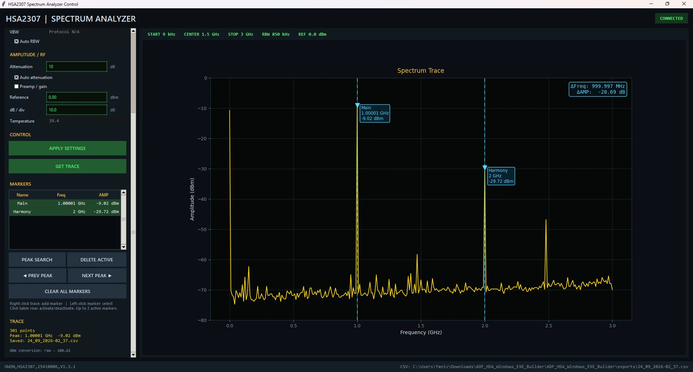
This completed the fundamental bring-up loop: the frequency requested through the UART CLI resulted in an SPI configuration, the ADF4351 reported PLL lock, and the RF carrier appeared at the expected frequency on the spectrum analyzer.
The signal generator could therefore be validated using the spectrum-analyzer platform developed earlier in this project, making the two halves of the RF lab directly complementary.
11.5 Output-Power Testing
The ADF4351 also provides four programmable nominal output-power settings:
To verify that the control was functioning, each setting was applied while observing the carrier level on the HSA2307.
| Programmed Setting | Measured Carrier Level |
|---|---|
| +5 dBm | +0.51 dBm |
| +2 dBm | -2.49 dBm |
| -1 dBm | approximately -5 dBm |
| -4 dBm | -7.99 dBm |
The absolute measured output was approximately 4.5 dB below the nominal programmed level, but the measured steps were very close to the expected 3 dB spacing.
This distinction is useful. The test does not establish the absolute calibrated output power of the ADF4351 IC itself, since the result also includes the low-cost module implementation, output matching network, coaxial losses, and measurement uncertainty. It does, however, confirm that the programmable RF-power field is functioning consistently and producing the expected relative change between settings.
When the RF output was disabled, the measured carrier dropped to approximately:
providing a clear experimental check that the firmware's output-enable control was also functioning.
11.6 Bring-Up Result
The bring-up process therefore validated the system at several independent levels:
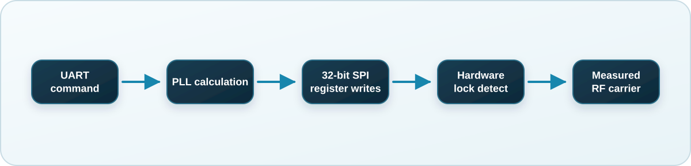
This layered validation was especially useful because failures at different stages produced very different symptoms. A syntactically correct command did not guarantee a valid register calculation, a valid register calculation did not guarantee correct SPI signaling, and correct SPI signaling did not by itself prove that the PLL had locked or that RF energy was appearing at the output.
By verifying each layer independently, the ADF4351 module was taken from an inexpensive RF breakout board to a functioning programmable CW source with confirmed frequency control, output-power control, RF enable/disable behavior, and PLL lock indication.
With the hardware and firmware validated, the remaining step was to replace the terminal-based control workflow with a dedicated PC signal-generator interface.
12. PC RF Signal Generator Interface
Once the ADF4351 could be configured reliably from the STM32 command-line interface, the final step was to make the source convenient to use during normal RF bench work.
Typing commands such as:
FREQ 1000
PWR 5
ON
LOCKwas useful during development, but not ideal for repeated measurements. A dedicated Python application was therefore written on top of the existing UART command interface.
Rather than duplicating the ADF4351 register calculations on the PC, the application leaves the low-level RF configuration inside the STM32 firmware. The GUI simply translates user actions into the same high-level CLI commands used during bring-up.
This keeps the control architecture straightforward:
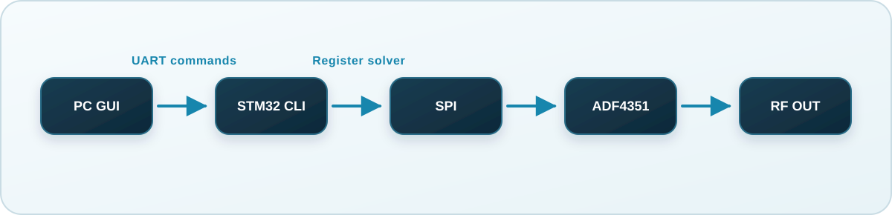
12.1 Connection and Communication
The application communicates with the STM32 through a standard USB-to-UART connection at 115200 baud.
When a COM port is opened, the software sends a STATUS command to verify that the expected synthesizer firmware is actually responding rather than assuming that any successfully opened serial port is the correct device.
The original STM32 CLI therefore remains the communication protocol between the PC and the embedded controller.
This also means the signal generator can still be operated from a terminal if the GUI is unavailable.
12.2 Frequency and Channel-Step Control
The main frequency control accepts values in:
- kHz;
- MHz;
- GHz.
The user can therefore enter frequencies in whichever unit is most convenient rather than manually converting everything into a single base unit.
The interface also exposes the synthesizer's channel step, which determines the fractional frequency resolution used by the STM32 PLL calculations.
Several frequently useful frequencies were added as quick presets:
allowing common test frequencies to be selected with a single click.
Before transmitting a request, the GUI checks that the selected frequency falls inside the implemented synthesizer range and that the channel step and output-power selections are valid. The resulting values are then converted into the corresponding STEP, PWR, and FREQ commands and sent to the STM32.
12.3 RF Output Control
The GUI exposes three separate controls affecting the RF hardware.
RF OUTPUT controls the ADF4351 RF output-enable bit while allowing the PLL itself to remain configured.
SYNTHESIZER CE controls the hardware chip-enable line and therefore provides a more complete synthesizer disable.
PDBRF MUTE controls the module's RF power-down input.
Keeping these functions separate was useful during bring-up because it made it possible to distinguish between disabling only the RF output stage and disabling the synthesizer hardware more completely.
The four programmable ADF4351 output-power settings are also directly selectable:
These correspond to the same settings validated experimentally in the previous section.
12.4 Synthesizer Status
In addition to controlling the generator, the application displays several internal synthesizer parameters returned by the STM32.
These include:
- PLL lock state;
- actual calculated output frequency;
- internal VCO frequency;
- channel spacing;
- INT;
- FRAC;
- MOD;
- RF output divider;
- integer-N or fractional-N operating mode.
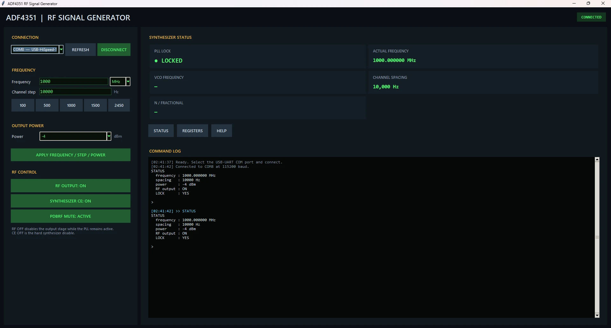
Displaying these values makes the GUI useful as more than a simplified control panel. It also exposes the underlying PLL state during experimentation.
For example, a 1 GHz request can immediately show that the internal VCO is operating at 4 GHz with an output divider of four, while a 2.45 GHz request can operate directly from the VCO without an additional RF divider.
12.5 Automatic Lock Monitoring
The hardware lock-detect signal is also incorporated into the application.
Rather than requiring the user to repeatedly issue the LOCK command manually, the GUI periodically queries the STM32 and updates the lock indicator automatically.
The current implementation performs this check approximately every 750 ms while the device is connected and the serial interface is otherwise idle.
The result is an immediate visual indication of whether the synthesizer has successfully settled after a frequency change.
This proved particularly useful during testing because a valid frequency calculation alone does not guarantee that the physical PLL has locked.
12.6 Debug and Diagnostic Access
Although the application is intended to simplify normal operation, the lower-level development tools were deliberately retained.
The interface therefore provides direct access to:
STATUS
REGISTERS
HELPand includes a command log showing communication between the PC and STM32.
The register display is particularly useful when debugging because the six generated 32-bit ADF4351 register values can still be inspected without returning to an external serial terminal.
This preserves much of the visibility that was useful during hardware bring-up while presenting the normal RF controls through a cleaner front end.
12.7 Result
The completed software stack now separated the system into three distinct layers:
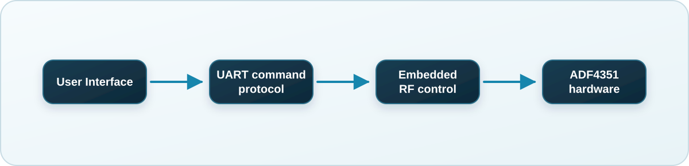
The PC application handles usability and presentation, the STM32 handles synthesizer calculations and hardware control, and the ADF4351 performs the RF generation.
This architecture also means that improvements to the embedded firmware do not require the PC application to understand the individual ADF4351 register fields.
Combined with the HSA2307 software developed earlier, the bench now contained two complementary PC-controlled RF instruments:
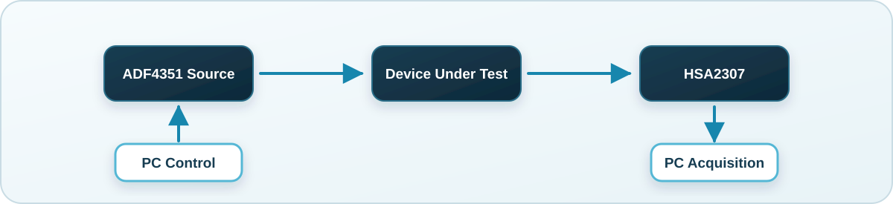
One system could generate a programmable CW stimulus, while the other could acquire and export the resulting spectrum.
13. Conclusion and Future Work
This project began with a relatively simple goal: build a more capable RF bench without the cost of conventional laboratory equipment.
The result was two complementary PC-controlled instruments built from inexpensive hardware.
On the measurement side, the HSA2307 investigation progressed well beyond its originally documented PC functionality. USB communication was characterized, hardware debug interfaces were investigated, the instrument firmware was extracted through SWD, and static analysis in Ghidra revealed the undocumented :SPEC:TRAC? command used internally to transfer spectrum data.
That command was then validated experimentally, its unusual response framing was characterized, the returned 301-point trace was reconstructed into a frequency spectrum, and the raw amplitude values were correlated with the instrument's own exported measurements. The recovered functionality was ultimately incorporated into a dedicated Python interface providing remote configuration, spectrum display, markers, and data export.
On the source side, an inexpensive ADF4351 synthesizer module was combined with an STM32 controller. The firmware calculates the required PLL parameters, constructs the six configuration registers, programs the synthesizer over SPI, and exposes the resulting functionality through the UART CLI originally developed in my first portfolio project.
That interface was then extended into a PC signal-generator application providing frequency, power, output-enable, and PLL-status control.
Together, the two systems form a small programmable RF bench:
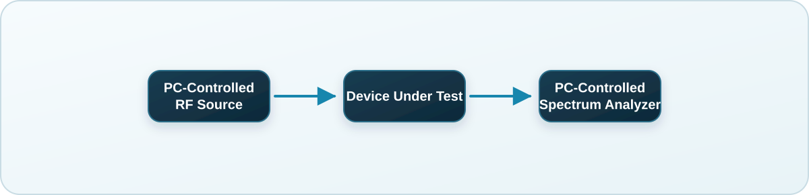
The setup is not intended to replace calibrated laboratory equipment. Absolute amplitude accuracy, phase noise, dynamic range, source purity, and other performance characteristics remain dependent on inexpensive RF modules and an entry-level handheld analyzer.
Its value is instead in making practical RF experimentation significantly more accessible.
13.1 Applying the Setup to Fabricated RF Designs
One particularly useful application is the validation of RF circuits that were previously designed and simulated.
Many of my earlier projects - including filters, couplers, transmission-line structures, and antennas - were developed primarily through circuit and full-wave electromagnetic simulation. Fabricating those designs introduces effects that are difficult to represent perfectly in simulation, including material tolerances, connector transitions, manufacturing variation, soldering, and unintended parasitics.
The completed RF bench provides a path toward closing that loop.
For example, a fabricated band-pass filter could be driven with a swept ADF4351 signal while the HSA2307 records the output amplitude. Repeating the measurement across frequency would allow the measured transmission response to be compared directly against ADS, HFSS, or CST predictions.
Even with the limitations of the hardware, this would allow useful quantities such as center-frequency shift, passband shape, insertion loss, bandwidth, and stopband behavior to be investigated experimentally.
The project therefore provides more than two standalone instruments. It creates a foundation for adding hardware validation to simulation-based RF design work.
13.2 Future Work - S11 Measurement
The most significant missing capability is currently reflection measurement.
The present source-and-spectrum-analyzer arrangement can measure transmitted signals relatively naturally, making it suitable for approximate \(S_{21}\)-type measurements. It cannot, however, directly separate the incident and reflected waves required to determine:
Adding this capability would significantly expand the usefulness of the bench, particularly for antenna, filter, matching-network, and transmission-line experiments.
A future extension could therefore add a directional coupler or RF bridge between the signal generator and the device under test. One coupled path could provide a reference proportional to the incident wave while another measurement path captures the reflected power.
With automated frequency sweeping, appropriate calibration, and correction for the coupler characteristics, the PC software could then calculate an approximate reflection response across frequency.
Conceptually:
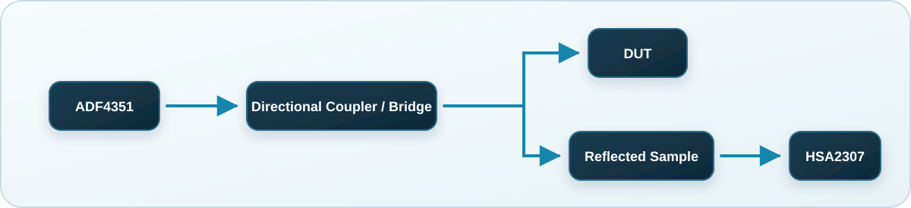
This would move the system toward a basic scalar network-analysis capability.
It would still not provide the full complex magnitude-and-phase measurement available from a vector network analyzer, but it would enable measurements such as return loss and approximate VSWR and would make practical \(S_{11}\) validation possible.
13.3 Final Result
The project ultimately combined several areas that are often treated separately: embedded firmware, digital-interface debugging, firmware reverse engineering, RF synthesizer programming, instrument automation, and practical RF measurement.
More importantly, it produced a bench that can continue to support future projects.
Instead of ending with a single measurement demonstration, the setup can now be used to test fabricated versions of simulated RF structures, automate frequency sweeps, export measurement data for comparison with simulation, and eventually expand into reflection measurements.
For a relatively low-cost collection of hardware, that makes it a useful platform for continuing the transition from simulated RF design toward design, fabrication, measurement, and validation.